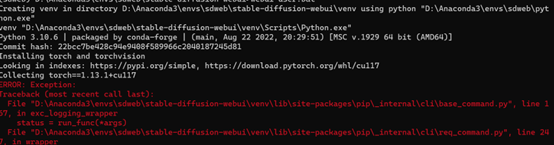

AI绘画初步尝试：Stable Difussion本地部署及WebUI使用
1. 安装conda、git、cuda
Cuda版本需要首先查看自己nvida显卡参数，不能高于参数上的版本
2. Conda创建环境，
python版本根据GitHub上的说明来选择conda create --name sdweb python=3.10.6
3. 进入创建的虚拟环境
conda activate sdweb
4. 在虚拟环境下克隆项目，注意：命令行需要cd到虚拟环境的目录，不然会默认git到c盘….
git clone https://github.com/AUTOMATIC1111/stable-diffusion-webui.git
实际上好像在哪里都无所谓？但是部署在这个位置的时候，运行.bat的时候，命令行显示的是：Creating venv in directory D:\Anaconda3\envs\sdweb\stable-diffusion-webui\venv using python "D:\Anaconda3\python.exe"venv "D:\Anaconda3\envs\sdweb\stable-diffusion-webui\venv\Scripts\Python.exe"Python 3.10.9 | packaged by Anaconda, Inc. | (main, Mar 1 2023, 18:18:15) [MSC v.1916 64 bit (AMD64)]
没有用虚拟环境下的python版本哎….但是存储位置好歹是对了
不对！或许应该在虚拟环境下用命令行运行这个.bat而不是点击！
环境对了，但是运行时系统突然卡死一段时间…..不敢动不敢动
错误显示是Torch安装失败，这个文章有提到把.bat的代码改一下，尝试之。
第六行改为：set COMMANDLINE_ARGS=--lowvram --precision full --no-half --skip-torch-cuda-test
这个.bat文件是另一个.bat的参数传入文件。
又寄啦，而且途中很卡
5. 还是看看电子佛祖布施的法器吧嘉人们
【AI绘画】Stable Diffusion整合包v4 BV1iM4y1y7oA